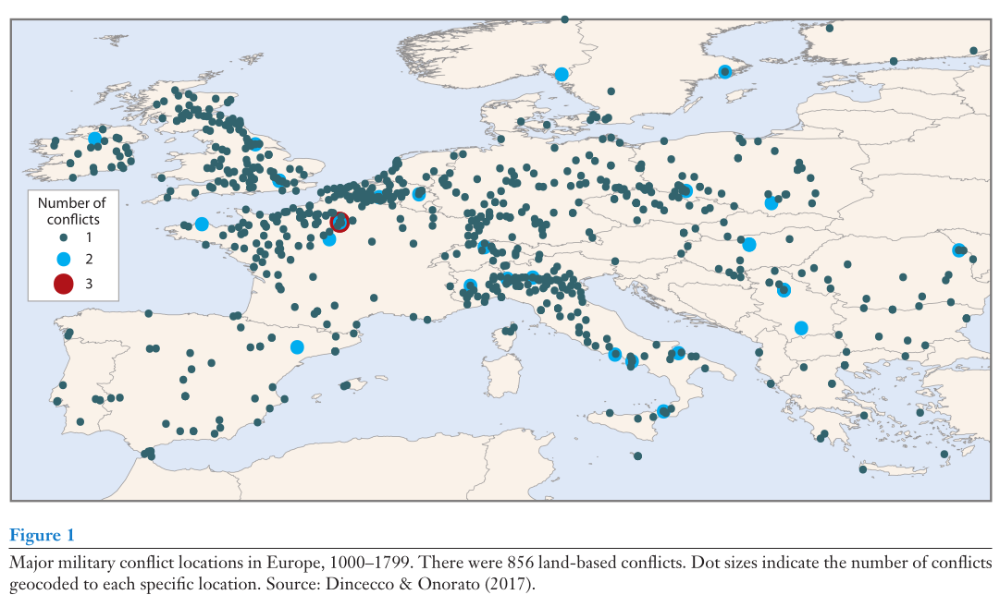
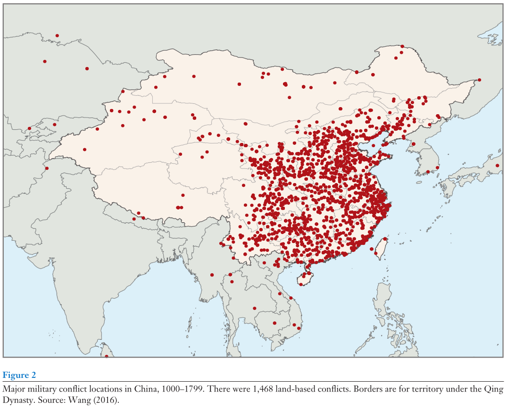
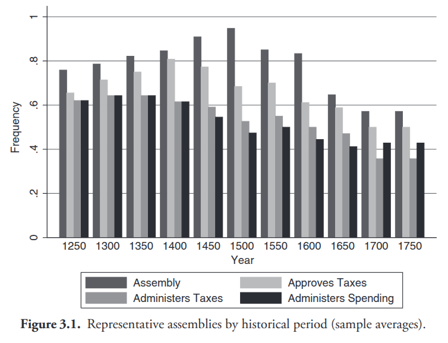
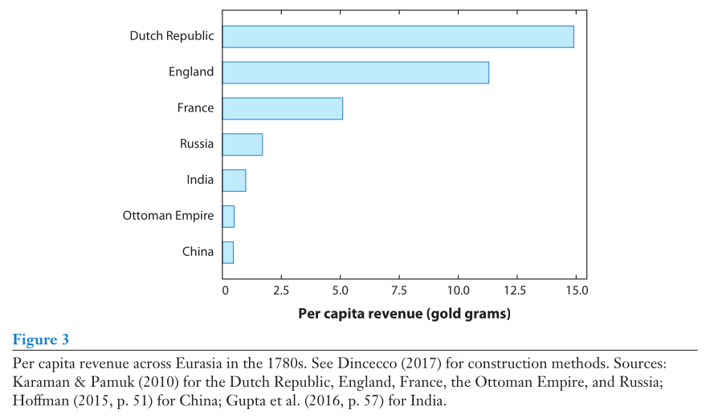
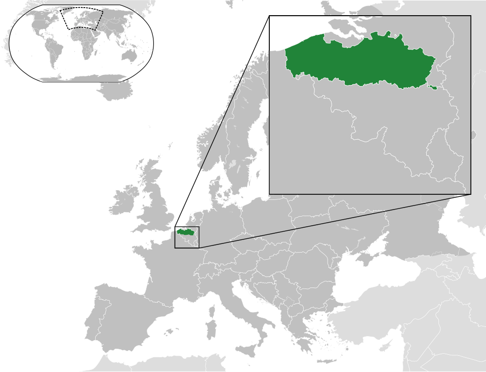
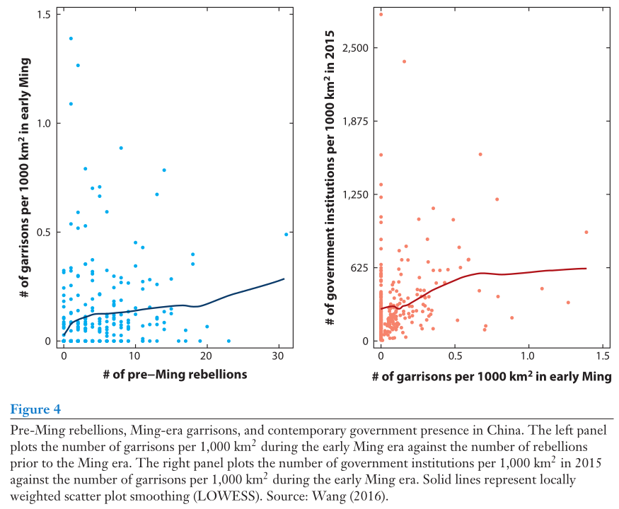

PSCI 2227: War and State Development
February 9, 2026
Latin America as a “hard case” for Tilly outside Europe
Key objectives for a ruler
Stay in power
Consolidate control
Expand territory
Monarch’s goals require cooperation from critical mass of elites
Why can’t they just govern on their own?
Need manpower
Need money
Elites best suited to pose internal threat (esp. historically)
If the king asks for money to build up the army, why would the elites say no?
(Take a minute to chat about this)
Is the cost worth the benefit?
Pressing external threat \(\leadsto\) common interest in defense
Interests not so clearly aligned in case of offensive wars
Will today’s military buildup weaken the elite’s power too much tomorrow?
Is the money really for the public defense?
“Incentive compatibility” problem: King wants revenue no matter what
e.g., Charles I and ship money in the 1630s
How can the elite respond when they don’t like what the ruler is doing?
Exit. Move oneself and/or one’s wealth out of the country.
Voice. Actively protest unwanted policies.
Loyalty. Push for improvement working within the system.
Optimal strategy in part depends on anticipated mode of dissent
Anticipated elite exit \(\leadsto\) “carrot” incentive to stay
Anticipated elite voice \(\leadsto\) “stick” of repression (preventive or reactive)
Where elite exit options are good:
Where elite exit options are bad:
Lingering question — how do we know how good or bad the exit option is?
Between 1000 and 1800, Europe and China both experienced plenty of war
Yet European states developed very differently from China
What does this tell us about the role of war in state development?


Lots of wars both places — but important differences on closer look
Institutional power for elites in Europe, no analogue in China

David Stasavage, States of Credit

Key variable according to Dincecco and Wang: political fragmentation
Very different calculations facing dissatisfied elites in these places
Rich and economically important due to textile industry
Technically owed allegiance to France, but imported most wool from England
Political exit: Allied with English early in Hundred Years War, in hopes of securing better long-run treatment
Individual exit: Traders and weavers moved to England or other regional locales

Europe: elite exit viable due to fragmentation
China: no realistic exit option

China sounds like the stronger state, yet didn’t raise nearly as much revenue from its subjects on a per capita basis
We’ll return to this when we talk about war and parliamentary development
No reading for Wednesday! Just keep thinking about paper topics.